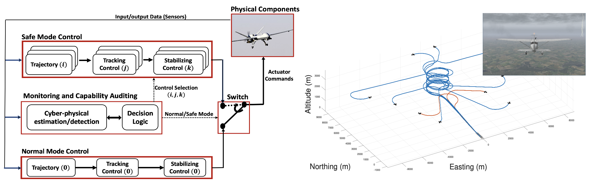

Safe Autonomy: Novel Autopilot Controllers for Improved Safety of Autonomous Systems
Our current effort addresses UAV emergency landing under system failures/attacks and other environmental uncertainties such as severe weather condition using a Multi-Level Adaptation approach. This is a milestone in a novel autopilot framework, which enables a UAV under large uncertainties to perform safety maneuvers that are traditionally reserved for human pilots with sufficient experience. From a mission control perspective, the framework replaces the traditional top-down, one-way adaptation between mission planning, trajectory generation, tracking and stabilizing controller, with a two-way adaptation between planning and control to improve the stability and robustness of the system.
Lab Environment
Media
Multi-Level Adaption Autopilot Framework for Engine-Out Landing Under Weather Uncertainties
This simulation presents engine-out automatic landing under severe weather using a Multi-Level Adaptation approach. This is a milestone in a novel autopilot framework, which enables an autonomous aircraft under large uncertainties to perform safety maneuvers that are traditionally reserved for human pilots with sufficient experience. We use X-Plane 11 high-fidelity flight simulator to test and validate the solution.
Stealthy Zero-Dynamics Actuator Attack Against Sampled-Data Cyber-Physical Systems
In this video, stealthy zero-dynamics attack is introduced. The video shows the trajectory tracking control of a quadrotor subject to zero-dynamics attack. Using a multirate adaptive controller, these attacks can be detected.